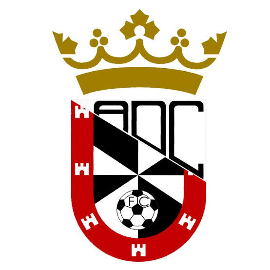
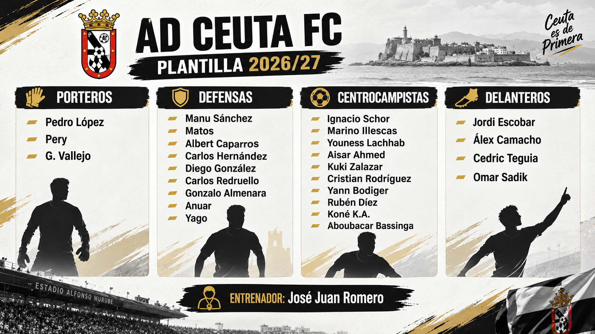

La Agrupación Deportiva Ceuta Fútbol Club o simplemente A. D. Ceuta F. C. es un club de fútbol español, de la ciudad autónoma de Ceuta. Fue fundado en 1956 con la denominación de Club Atlético de Ceuta por la fusión de la S. D. Ceuta y el C. Atlético de Tetuán. Compite en la Segunda División de España y disputa sus encuentros como local en el Municipal Alfonso Murube, con capacidad para 5500 espectadores.
